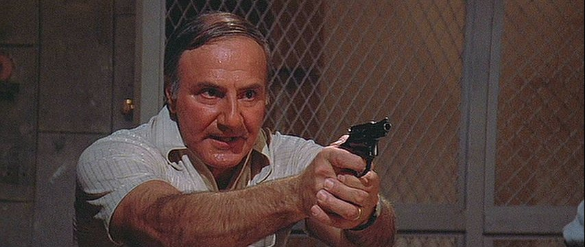
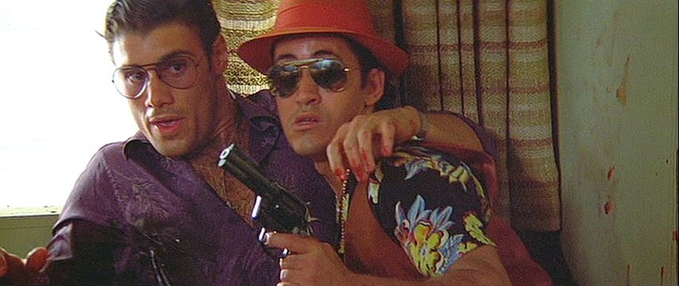
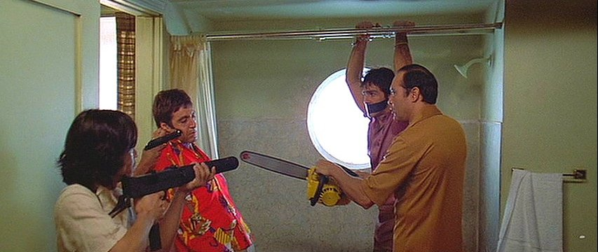
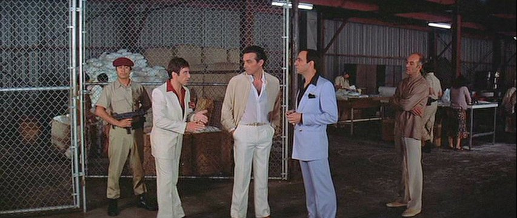
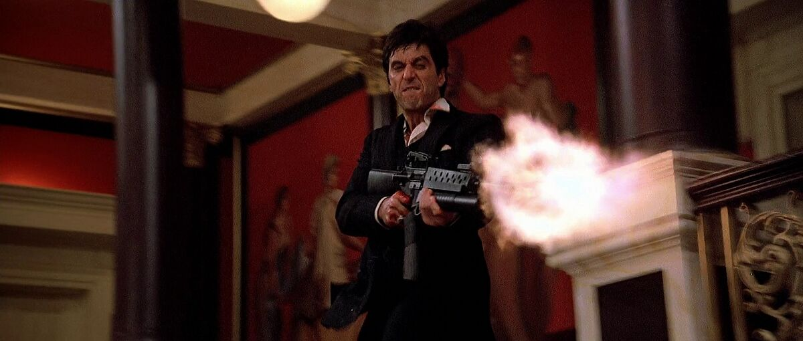
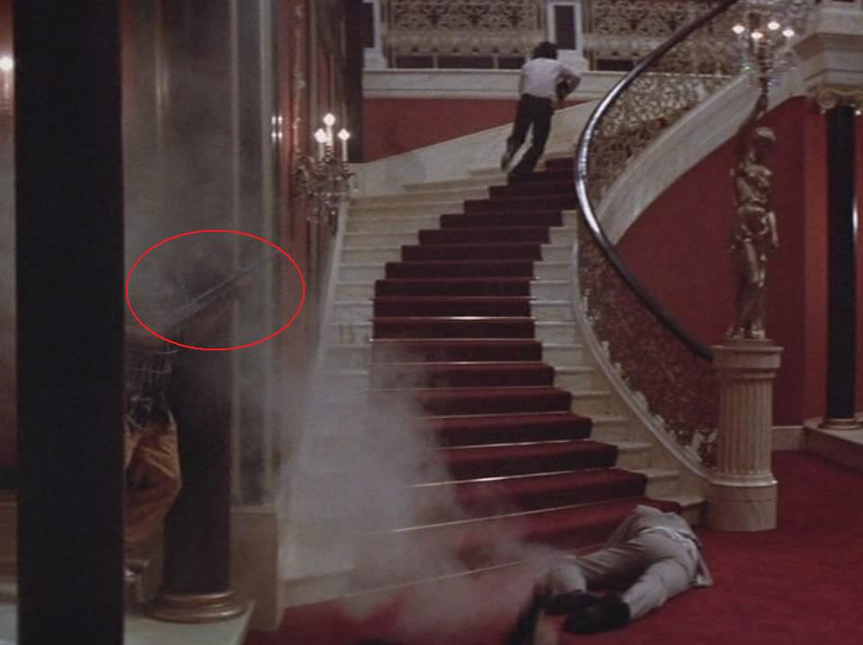
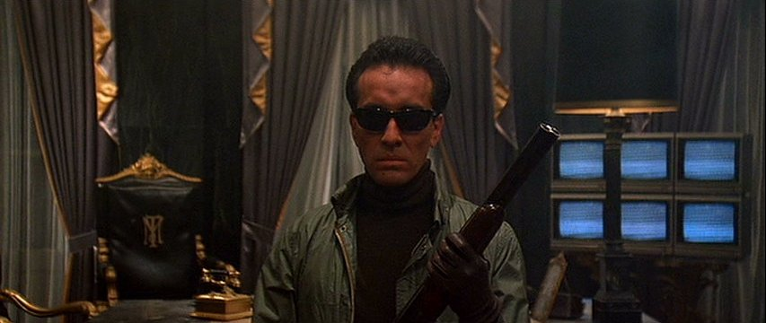

ARMAMENTO
Armas usadas en la película:
Revólver Smith & Wesson Modelo 36
- Tipo: Revólver compacto.
- Calibre: .38 Special.
- Capacidad: 5 balas.
- Características: Pequeño y fácil de ocultar. Común como arma de defensa personal.

"Seidelbaum" desenfunda su Model 36 para arrestar a TonyRevólver Colt Python
- Tipo: Revólver de doble acción.
- Calibre: .357 Magnum.
- Capacidad: 6 balas.
- Características: Alta precisión y calibre. Considerado uno de los revólveres más elegantes jamás fabricados.

Chi Chi sostiene a un Manny herido con su Colt Python en la manoSubfusil MAC-10
- Tipo: Subfusil compacto.
- Calibre: .45 ACP o 9 mm.
- Capacidad: Entre 30 a 32 balas según calibre.
- Características: Alta cadencia, pequeño y fácil de ocultar. A menudo usado junto a un silenciador largo.

Un sicario colombiano sostiene una Mac-10 en la escena de la motosierraSubfusil UZI
- Tipo: Subfusil.
- Calibre: 9x19 mm.
- Capacidad: Cargadores de 25, 32 o más balas.
- Características: Compacto y automático.

El guardia de la fábrica sostiene una UziRifle M16A1
- Tipo: Fusil de asalto militar.
- Calibre: 5.56x45 mm.
- Capacidad: Cargadores de 20 o 30 balas.
- Características: Ligero, alta cadencia de fuego y gran precisión para un rifle automático.

Tony disparando a los sicarios que suben las escalerasEscopeta Remington 870
- Tipo: Escopeta de acción por bombeo.
- Calibre: 12 gauge.
- Capacidad: Entre 4 y 7 cartuchos según modelo.
- Características: Extremadamente fiable, muy usada por policías y civiles en EE.UU.

Uno de los hombres de Sosa dispara su Remington 870Escopeta Recortada
- Tipo: Escopeta recortada de doble cañón.
- Calibre: 12 gauge.
- Capacidad: 2 cartuchos.
- Características: Extremadamente potente a corta distancia. El cañón corto aumenta la dispersión de perdigones. Más fácil de ocultar que una escopeta normal.

"The Skull" camina por la oficina de Tony con una recortada